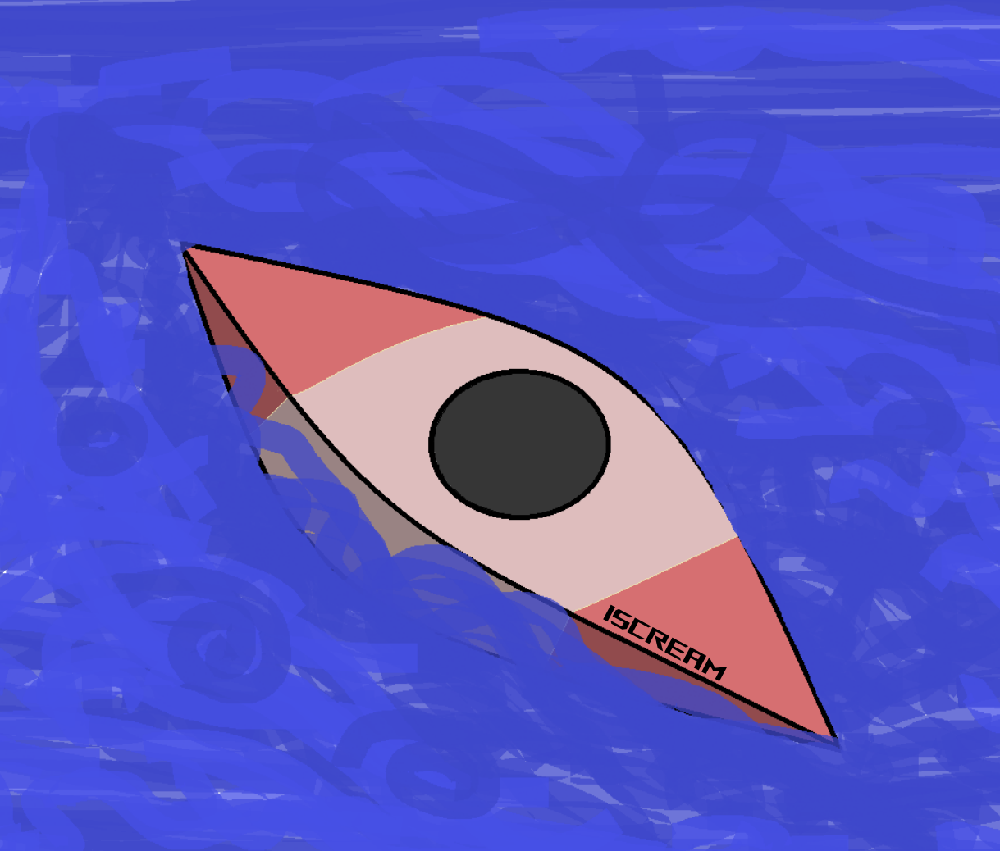

VAJDA iScream
Vajda iScream є популярним вибором серед слаломних веслувальників, оскільки він пропонує низку переваг, орієнтованих на стабільність і контроль, особливо для тих, хто проходить складні слаломні траси. Зокрема, його конструкція включає більш широкий кокпіт і форму корпусу, що підвищує стійкість, дозволяючи веслувальнику з більшою впевненістю виставляти край і покращуючи контроль над рухами. Такий дизайн особливо корисний під час виконання складних маневрів, оскільки дозволяє спортсмену регулювати положення без втрати рівноваги. iScream доступний у різних розмірах, що дозволяє підібрати модель для веслувальників різної ваги та рівня підготовки. Крім того, матеріали та конструктивні вдосконалення забезпечують йому довговічність і стійкість, що корисно в умовах екстремальних навантажень, як-от на порожистих трасах. У порівнянні з попередніми моделями, такими як Maverick, користувачі виявили, що на iScream легше починати і підтримувати рух вперед, навіть під час різких поворотів.
